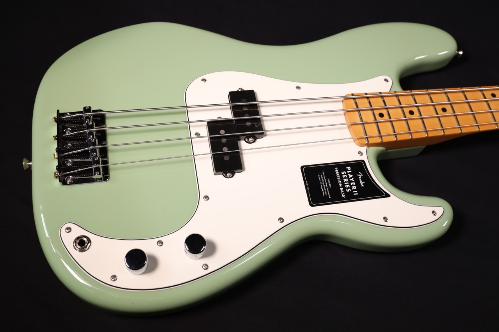
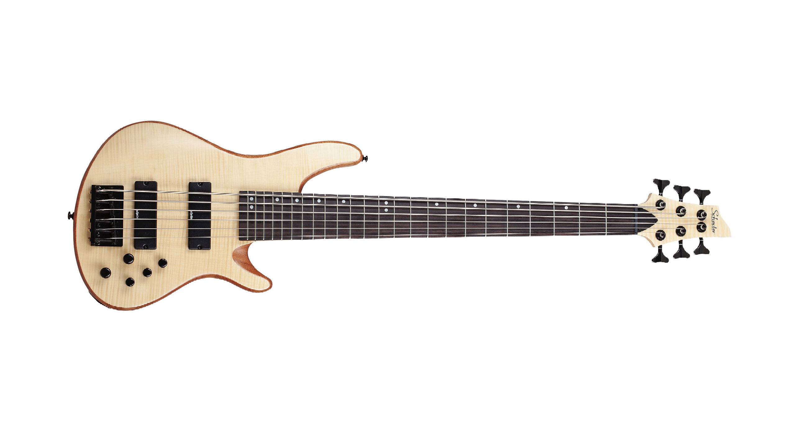

Why I Love the Bass
The bass holds the groove — it’s my bridge between rhythm and melody.
- What I gain from playing
- Deep pocket and timing
- Improved ear for harmony
- Connection with other musicians
- Favorite styles: Funk, Rock, Jazz
- Practice goals: slap technique, tone shaping, improvisation
Jump to my dream gear list: Wishlist
The Song I Am Learning
Here is the video:
Music Streaming Trends (Tableau Embed)
This is a live embedded Tableau Public visualization about music streaming data (interactive).
Cool Bass Guitars I'd Like to Buy
My short-list of dream basses — a mix of iconic tone and playability.

Fender Precision Bass
Thick fundamental tone and industry-standard feel — the workhorse bass.

Music Man Bass
Exceptional build quality and distinctive tone — a favorite among professionals.

Schecter 6-String Bass
Extended range for modern tones — perfect for progressive and studio work.